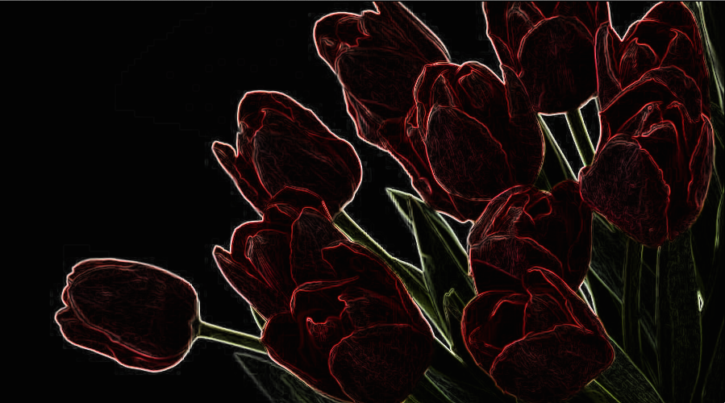
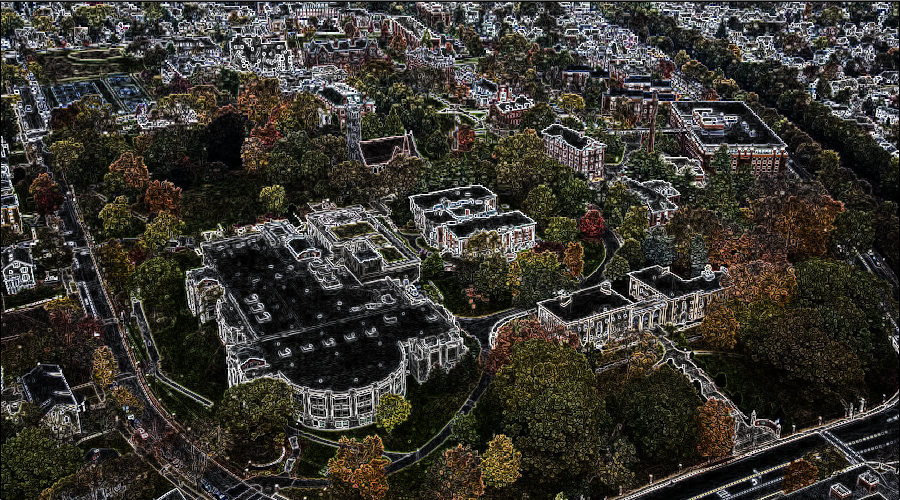
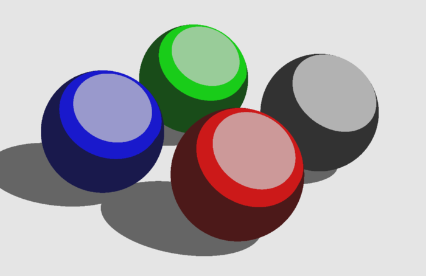
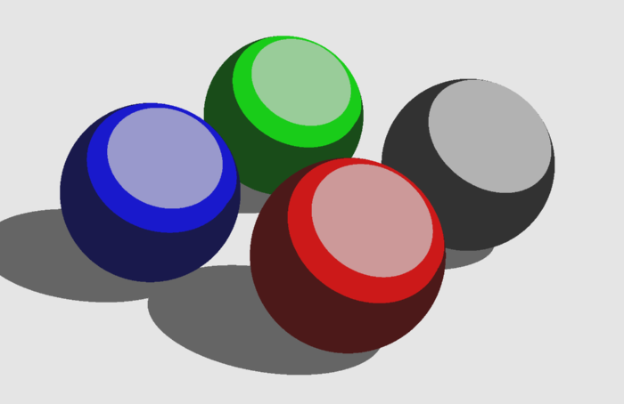
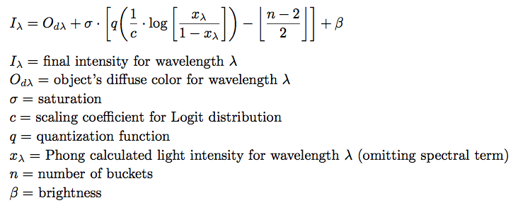
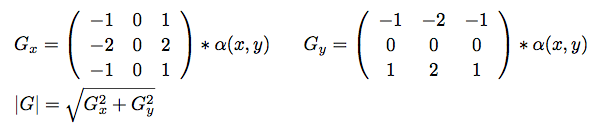

A Post-Process Approach to Cartoon Edge Drawing
Paul Chang & Andrew Dempsey



Oftentimes, a fully realistic rendering of a scene is not entirely ideal for a given project. As an alternative, many developers will often turn to cel shading to achieve a unique appearance for 3D scenes.
Cel shading is a non-photorealistic rendering process that carries an iconic look. It seeks to mimic the style of traditional 2D animation and art by using flat, discrete colors, rather than a continuous gradient. The top image on the right depicts the Phong illumination model, a common algorithm for computing realistic scenes. On the bottom, we see the same scene rendered with cel shading.
 

The unique appearance of cel shading is achieved by quantizing illumination values into discrete "buckets." In our implementation, bucket thresholds are calculated using the logit function to create a function for mapping illumination values to buckets.
The final lighting value may be computed from the following equation:
The coefficient c allows us to adjust the distribution of cells on a given object. A high c will produce objects with higher probability of being shaded with a neutral term, while low c will give a uniform probability distribution of shading. The saturation term allows us to adjust the contrast between shading values, and the brightness allows us to set the lower bound of illumination. For n buckets, at most n - 1 distinct shades may be produced in the scene for each object.
A common stylistic choice in cel-shaded rendering is the addition of dark outlines along objects, which helps maintain the illusion of 2D imagery. To accomplish this effect, we chose a post-processing approach.
The scene is initially rendered with a normal raytracer. Once the scene is completed, we perform a second rendering pass. At each element of a buffer α, we convolve the Sobel operator with the value stored in the element, which allows us to approximate the gradient between the element and its surrounding values:
This allows us to store a data structure of the amount of change between a pixel and its surroundings. If the amount of change exceeds a certain threshold, then an edge drawing is composited on top of the original rendering.
Each rendering contains several pieces of data that can be used to help determine the location of edges. In this project, we explored two sources: light intensity, and depth. Edge presence was computed similarly in both cases (using the Sobel operator method mentioned above), but the processes differ in some important details and, consequently, can produce very different results.
For calculating differences in intensity, we create a new buffer of the rendered image in grayscale and apply the Sobel operator over this buffer. We then scale the final results and determine if they are above a user-set threshold. If the threshold is exceeded, the edge is drawn over the original image. The result of this calculation applied to a toon-shaded scene is shown in the top image. This approach produces very well defined lines around objects, but suffers from innacuracies, as it tends to draw edges around shadows and shading lines on objects.
To calculate edges from depth, we created a z-buffer to store the distance of from each object to the camera at each individual pixel. We then applied the Sobel operator over this z-buffer to determine the amount of change between each pixel. A visualization of the calculated z-buffer is shown in the bottom image. Using this approach, we no longer suffer from edges drawn along shadows or shade lines, but receive less distinct lines, as there may not be enough change, for example, between the bottom of a sphere and the floor it rests on.
As a final touch, the renderings are supersampled in order to ensure there are no "jaggies" present in the final rendering. To accomplish this, rather than calculating illumination at a single pixel, the illumination is calculated at several points around the pixel, and the intensities are averaged together. This results in much smoother edges, and is essential for ensuring clean toon-shaded renderings.

Image courtesy of Paul Bourke
To compile the final project, simply import the .xcodeproj file into Xcode, and build the program. Ensure that GLUT and GLUI are installed on the machine and pointed to correctly by the project's preferences file.